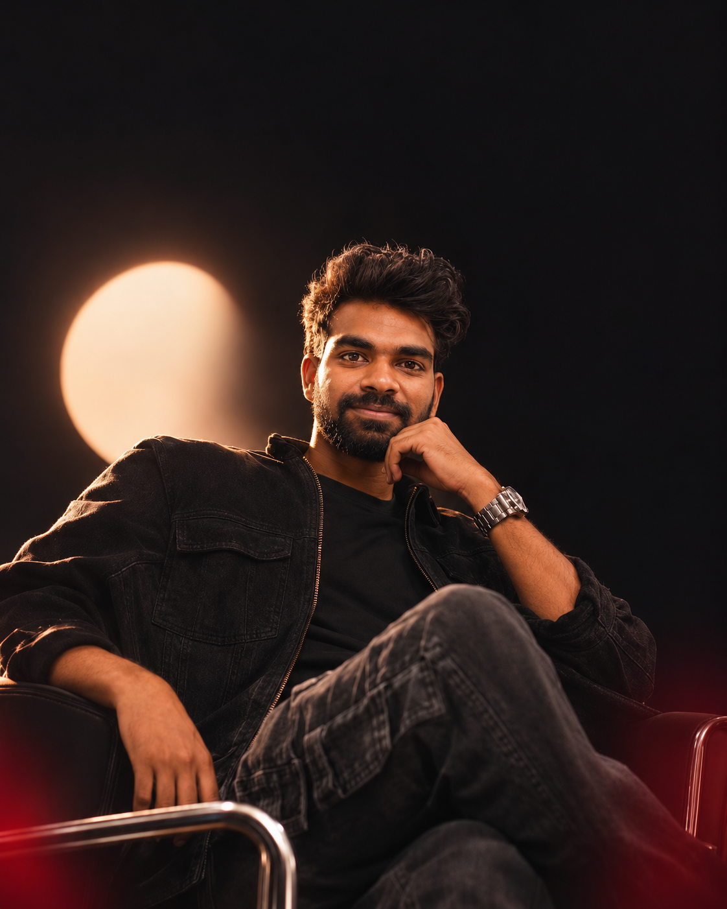

Find the real question.
Start with the person, the friction, and the reason an idea should exist.
INDEPENDENT BUILDER · INDIA
Hello, I'mAt the intersection of technology & design.
Curious about what's possible. Focused on what's useful.

DEVELOPER / DESIGNER / BUILDER01 / SELECTED WORK
From a virtual chemistry lab to new ways
of creating for the web. A selection of
products, prototypes, and ongoing explorations.
Project covers are visual interpretations. Open a project for its story and current stage.
02 / THE PERSON BEHIND THE PIXELS
BASED IN INDIA. THINKING BEYOND BOUNDARIES.
I like turning “what if”
into something you can use.
I'm Ravi — a developer, designer, and builder exploring how thoughtful interfaces can make complex things feel simple.
My projects start with real questions. Can a student learn chemistry by experimenting in a browser? Can an existing website be reimagined? Can a product photo become the beginning of a story?
I build, test, question, and refine. Across education, creative tools, and AI, the goal stays the same: make an experience worth using.
03 / FROM QUESTION TO EXPERIENCE
An idea is only the beginning.
The work is in making it feel right.
Start with the person, the friction, and the reason an idea should exist.
Sketch, prototype, and find the visual language that makes the experience click.
Connect the interactions, test the flow, and keep improving what people actually use.
04 / HOW I THINK & MAKE
Exploring spatial interfaces, browser-based labs, direct manipulation, and motion that supports the experience.
Turning a product question into clear flows, responsive layouts, and prototypes that can be explored and refined.
Investigating how AI can support discovery, website transformation, and creative production — with prototypes grounded in what works today.
Bringing typography, narrative, interaction, and engineering together in the browser.
ON THE DRAWING BOARD
Early ideas and ongoing research.
Different questions. The same curiosity.
A period and symptom tracking exploration, with editable records, timelines, and local persistence as development goals. Not a diagnostic service.
Research into simplifying solar purchase and home energy monitoring in India — connecting generation, household consumption, and grid import/export in one understandable experience.
A continuing exploration of cinematic typography, responsive storytelling, cursor interactions, and smooth, accessible browser motion.
05 / THE NEXT CHAPTER
A useful product. An unexpected interaction.
An idea that deserves to become real.